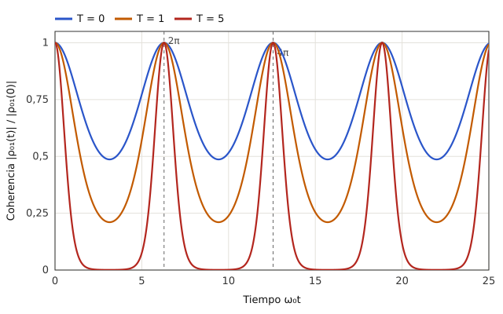
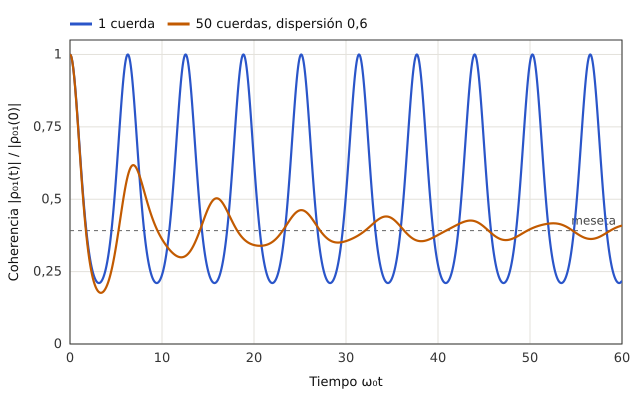
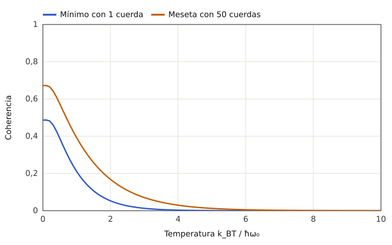
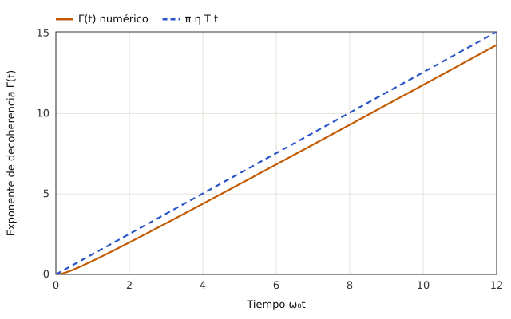
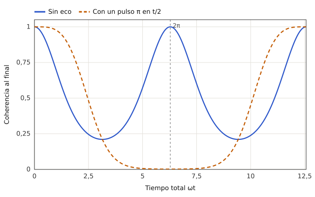
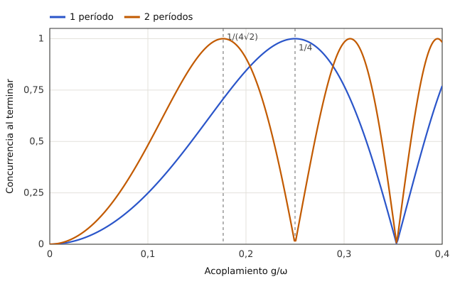
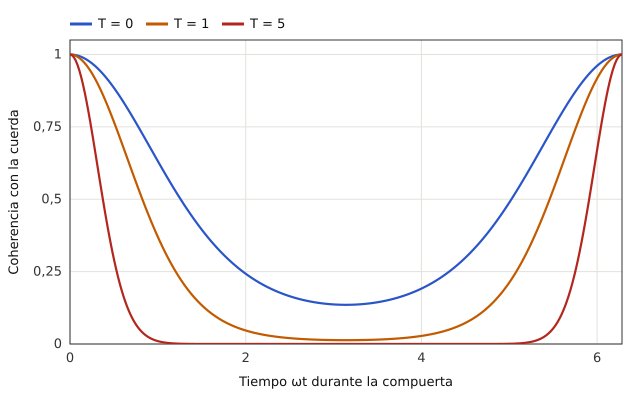

Preprint · documento de trabajo sin revisión por pares
Cuerdas y coherencia: una vibración que destruye la superposición y otra que entrelaza
Strings and coherence: a vibration that destroys superposition and another that entangles
Bruno Loiacono · Estudiante de Física, Universidad de Buenos Aires · Noviembre de 2026
Resumen
La idea que motiva este trabajo era una imagen: partículas unidas por cuerdas que vibran, como si la vibración las mantuviera en un estado especial. La imagen apunta a dos fenómenos reales que este trabajo calcula con fórmulas exactas. En el primero, un qubit acoplado linealmente a osciladores armónicos pierde coherencia porque cada uno de sus estados deja una huella distinta en las vibraciones. Con un solo oscilador y $g/\omega = 0{,}3$ a temperatura $k_BT = \hbar\omega$, la coherencia baja al 21 % a mitad de período y vuelve entera en cada período. Con 50 osciladores de frecuencias distintas y el mismo acoplamiento total, se estanca cerca del 39 %: la irreversibilidad viene de la cantidad de lugares donde se reparte la información, no de la fuerza del acoplamiento. En el límite de un baño óhmico continuo se recupera un decaimiento exponencial con $T_2 = \hbar/(\pi\eta k_BT)$. En el segundo, dos qubits que empujan la misma vibración quedan entrelazados por una fase geométrica, con concurrencia $|\sin(8\pi n (g/\omega)^2)|$ al cabo de $n$ períodos, independiente de la temperatura: es el principio de las compuertas de Mølmer y Sørensen en iones atrapados.
Abstract
The idea behind this paper was an image: particles tied together by vibrating strings, as if the vibration kept them in a special state. The image points to two real phenomena that this paper computes with exact formulas. In the first, a qubit linearly coupled to harmonic oscillators loses coherence because each of its states leaves a different imprint on the vibrations. With a single oscillator, $g/\omega = 0.3$ and $k_BT = \hbar\omega$, coherence drops to 21% at half a period and fully returns every period. With 50 oscillators of different frequencies and the same total coupling, it settles near 39%: irreversibility comes from the number of places where information spreads, not from the coupling strength. In the limit of a continuous ohmic bath an exponential decay with $T_2 = \hbar/(\pi\eta k_BT)$ is recovered. In the second, two qubits pushing the same vibration become entangled through a geometric phase, with concurrence $|\sin(8\pi n (g/\omega)^2)|$ after $n$ periods, independent of temperature: the principle behind Mølmer–Sørensen gates in trapped ions.
Palabras clave: decoherencia; desfasaje puro; modelo spin-bosón; entrelazamiento; fase geométrica; eco de espín.
Keywords: decoherence; pure dephasing; spin-boson model; entanglement; geometric phase; spin echo.
1. Introducción
La idea original era una imagen: dos partículas en el mismo lugar, unidas por cuerdas que vibran, como si la vibración las mantuviera en un estado especial. La imagen mezcla conceptos. En mecánica cuántica, una superposición no es dos cosas en el mismo lugar sino una cosa en una combinación de estados, y «dos partículas en el mismo punto» es otro tema, el de la estadística de fermiones y bosones.
Lo que la intuición capta bien es que la vibración y la superposición están íntimamente relacionadas. Una superposición acoplada a algo que vibra puede perderse: es la decoherencia. Y dos superposiciones acopladas a la misma vibración pueden correlacionarse: es el entrelazamiento. La sección 2 resume la historia de las dos preguntas. La sección 3 escribe dos modelos con solución exacta y deriva sus fórmulas con unidades explícitas. La sección 4 los evalúa. La sección 5 discute qué tienen en común, qué resuelve la decoherencia y qué no, y la pregunta de las partículas en el mismo punto.
2. Antecedentes
2.1. Superposición y coherencia
Dirac (1930) puso en el centro de la mecánica cuántica el principio de superposición: si $|0\rangle$ y $|1\rangle$ son estados posibles, también lo es $\alpha|0\rangle + \beta|1\rangle$, con $|\alpha|^2 + |\beta|^2 = 1$. Una superposición no es ignorancia: las amplitudes interfieren. La matriz densidad distingue una superposición de una mezcla clásica: sus elementos diagonales son las probabilidades y los no diagonales, $\rho_{01} = \alpha\beta^*$, las coherencias, que miden la capacidad de interferir. Una mezcla tiene la misma diagonal y $\rho_{01} = 0$. Schrödinger (1935) planteó el gato en superposición de vivo y muerto como una reducción al absurdo: algo falta en una teoría que predice superposiciones macroscópicas que nadie ve.
2.2. Entrelazamiento
Einstein et al. (1935) mostraron que la mecánica cuántica permite estados de dos partículas en los que medir una determina el resultado de medir la otra, y concluyeron que la teoría estaba incompleta. Schrödinger (1935) llamó a ese rasgo entrelazamiento y lo consideró el característico de la teoría. Bell (1964) demostró que ninguna teoría de variables ocultas locales reproduce todas sus predicciones, y Aspect et al. (1982) hicieron una de las pruebas experimentales decisivas. Para dos qubits en un estado puro $a|00\rangle + b|01\rangle + c|10\rangle + d|11\rangle$, el entrelazamiento se mide con la concurrencia de Wootters (1998),
que va de 0, un estado producto, a 1, un estado de Bell.
2.3. Decoherencia
Zeh (1970) señaló que ningún sistema macroscópico está aislado: su interacción con el entorno lo entrelaza con él, y si se mira solo el sistema, las coherencias desaparecen. Zurek (1981); Zurek (2003) mostró que el entorno selecciona ciertos estados robustos, los estados puntero, y destruye rápidamente las superposiciones entre ellos. Joos y Zeh (1985) estimaron cuán rápido ocurre para objetos macroscópicos, y Schlosshauer (2007) reunió el campo en un libro. Brune et al. (1996) observaron por primera vez la decoherencia progresiva de un «medidor»: un campo de microondas en una cavidad, que hacía de cuerda de luz. Arndt et al. (1999) mostraron interferencia con moléculas de fullereno; Hornberger et al. (2003) midieron cómo las colisiones con un gas la destruyen, cada colisión una cuerda que registra por dónde pasó la molécula; y Fein et al. (2019) llegaron a moléculas de más de 25 000 unidades de masa atómica.
2.4. Sistemas cuánticos abiertos
El modelo de la sección 3.2 es un caso particular del modelo spin-bosón: Caldeira y Leggett (1983) estudiaron el movimiento browniano cuántico con un baño de osciladores, y Leggett et al. (1987) escribieron la revisión clásica del sistema de dos niveles disipativo. El caso de desfasaje puro tiene solución exacta, que Palma et al. (1996) analizaron para estimar la decoherencia en una computadora cuántica y que Breuer y Petruccione (2007) desarrollan en su libro. La notación $T_1$ y $T_2$ para los tiempos de relajación viene de Bloch (1946).
2.5. Vibraciones que entrelazan
Cirac y Zoller (1995) propusieron usar el modo de vibración compartido de una cadena de iones atrapados para hacer compuertas cuánticas, con la vibración en su estado fundamental. Mølmer y Sørensen (1999) y Sørensen y Mølmer (1999) encontraron una compuerta que funciona con iones «calientes», porque solo depende de una fase geométrica en el sentido de Berry (1984). Leibfried et al. (2003) demostraron una compuerta de fase geométrica de alta fidelidad con dos iones de berilio, con un acoplamiento del tipo de la sección 3.5.
2.6. Ecos
Hahn (1950) descubrió que un pulso que invierte los espines a mitad de camino hace reaparecer la señal perdida por un desfase estático: el eco de espín. Carr y Purcell (1954) y Meiboom y Gill (1958) propusieron repetir los pulsos, Viola y Lloyd (1998) mostraron que la idea sirve para desacoplar un qubit de un baño lento, y Biercuk et al. (2009) lo demostraron con iones atrapados. Peres (1984) propuso medir la sensibilidad de un sistema cuántico a una inversión imperfecta, el eco de Loschmidt.
3. Modelos
3.1. Unidades
Se escriben las fórmulas con $\hbar$ y $k_B$ explícitos. Las frecuencias $\omega_k$ y los acoplamientos $g_k$ están en $\mathrm{s^{-1}}$, de modo que $g_k/\omega_k$ es adimensional, y $\hbar\omega/(k_BT)$ también. Los cálculos numéricos usan $\hbar = k_B = 1$ y una frecuencia de referencia $\omega_0 = 1$: el tiempo va en unidades de $1/\omega_0$ y la temperatura en unidades de $\hbar\omega_0/k_B$. Para un oscilador con $\omega_0/2\pi = 1$ MHz, $T = 1$ corresponde a 48 µK; para uno de 1 THz, a 48 K.
3.2. Versión A: un qubit y sus cuerdas
El qubit tiene dos estados, que se describen con $\sigma_z$ ($+1$ en $|0\rangle$ y $-1$ en $|1\rangle$). Cada cuerda es un oscilador armónico con operadores $a_k$ y $a_k^\dagger$. El hamiltoniano es
con los dos términos en unidades de energía. El qubit empuja cada cuerda en un sentido si está en $|0\rangle$ y en el opuesto si está en $|1\rangle$. Ningún término cambia el estado del qubit: las probabilidades se conservan y solo cambia la coherencia. Es un modelo de desfasaje puro.
Si la cuerda $k$ empieza en el vacío, en cada rama evoluciona a un estado coherente (Glauber 1963) de amplitud
adimensional. La distancia entre las dos huellas es $|\alpha_+ - \alpha_-|^2 = 8 (g_k/\omega_k)^2 (1 - \cos\omega_k t)$: nula al principio, máxima a mitad de período y nula otra vez al completarlo. La coherencia que queda es el solapamiento de las huellas, $e^{-|\alpha_+ - \alpha_-|^2/2}$ para cada cuerda. Si las cuerdas empiezan en equilibrio térmico, las fluctuaciones multiplican el exponente por $\coth(\hbar\omega_k/2k_BT)$, que vale 1 a temperatura cero y crece como $2k_BT/\hbar\omega_k$ a temperatura alta (Palma et al. 1996; Breuer y Petruccione 2007). La fórmula exacta es
Con una cuerda, el exponente vuelve a cero en cada período $2\pi/\omega$ y la coherencia vuelve entera. Con muchas cuerdas de frecuencias distintas, los cosenos se desfasan, su promedio se anula y la coherencia tiende a la meseta
Para comparar con la misma fuerza total, con $n$ cuerdas se usa $g_k = g/\sqrt n$, de modo que $\sum_k g_k^2 = g^2$. Si las frecuencias están equiespaciadas con separación $\Delta\omega$, los cosenos vuelven a estar en fase después de $2\pi/\Delta\omega$.
3.3. El baño continuo
En un material real el qubit se acopla a un continuo de modos. La suma se reemplaza por una integral con la densidad espectral $J(\omega) = 4\sum_k g_k^2\,\delta(\omega - \omega_k)$, en $\mathrm{s^{-1}}$, y la coherencia es $e^{-\Gamma(t)}$ con
adimensional porque $J\,\mathrm{d}\omega/\omega^2$ lo es. Para un baño óhmico, $J(\omega) = \eta\,\omega\, e^{-\omega/\omega_c}$ con $\eta$ adimensional, a temperatura alta ($k_BT \gg \hbar\omega_c$) se puede usar $\coth x \approx 1/x$, y para $t \gg 1/\omega_c$, $\int_0^\infty (1 - \cos\omega t)\,\omega^{-2}\,\mathrm{d}\omega = \pi t/2$. Queda
donde $\hbar/(k_BT)$ tiene unidades de tiempo. La coherencia decae como una exponencial simple: es el tiempo de desfasaje que se informa para cada qubit.
3.4. El eco
Si a mitad del tiempo total $t$ se aplica un pulso que invierte el qubit, la fuerza sobre cada cuerda cambia de signo y la distancia entre huellas pasa a ser proporcional a $|1 - 2e^{i\omega t/2} + e^{i\omega t}|^2 = 16\sin^4(\omega t/4)$. El exponente de cada cuerda queda
Para $\omega t \ll 1$ es mucho menor que el original: el eco protege contra cuerdas lentas. Para $\omega t = 2\pi$ es máximo, mientras que sin eco la coherencia habría vuelto entera.
3.5. Versión B: dos qubits y una cuerda compartida
Si dos qubits empujan la misma cuerda,
La suma $S = \sigma_z^{(1)} + \sigma_z^{(2)}$ vale $\pm 2$ si los qubits están alineados y 0 si están opuestos. Para cada valor de $S$, completando el cuadrado, $H = \hbar\omega\,(a + gS/\omega)^\dagger(a + gS/\omega) - \hbar g^2 S^2/\omega$: la cuerda describe un círculo en el espacio de fases, vuelve a su estado inicial cada período, y la rama acumula una fase $g^2S^2 t/\omega$. Al cabo de $n$ períodos, $t = 2\pi n/\omega$, la fase de las ramas alineadas respecto de las opuestas es
adimensional. Partiendo de los dos qubits en $(|0\rangle + |1\rangle)/\sqrt2$, el estado final es $\tfrac12(e^{i\varphi}|00\rangle + |01\rangle + |10\rangle + e^{i\varphi}|11\rangle)$, y la ecuación \eqref{eq:concurrencia} da
que es máxima para $g/\omega = 1/(4\sqrt n)$. Como la cuerda vuelve exactamente a su estado inicial, sea cual sea, el resultado no depende de la temperatura. Durante la compuerta, en cambio, los qubits están entrelazados con la cuerda, y su coherencia con ella sigue la ecuación \eqref{eq:coherencia} con fuerza $2g$.
4. Resultados
Todas las cifras salen de paper/figuras/generar.js.
4.1. Una cuerda: pérdida reversible
Con una cuerda, $g/\omega = 0{,}3$ y $T = 1$, el factor térmico es $\coth(0{,}5) = 2{,}164$ y el exponente a mitad de período vale $8 \cdot 0{,}09 \cdot 2{,}164 = 1{,}558$: la coherencia mínima es 21,1 %, y en $t = 2\pi$ vuelve al 100 % (figura 1). A temperatura cero, con $g/\omega = 0{,}1$ la coherencia apenas baja al 92,3 %, y con $g/\omega = 0{,}6$ cae al 5,6 % pero también vuelve entera. Bajar mucho no es lo mismo que perderse: la información estuvo un rato en la cuerda y regresó.

4.2. Muchas cuerdas: pérdida irreversible
Con 50 cuerdas de frecuencias entre $0{,}7$ y $1{,}3$, cada una con $g_k = 0{,}3/\sqrt{50} = 0{,}042$, el mismo acoplamiento total, la coherencia mínima es 17,7 %, en $t = 60$ vale 40,9 % y la meseta \eqref{eq:meseta} es 39,2 % (figura 2). Con las mismas 50 cuerdas sin dispersión de frecuencias, la coherencia vuelve entera en $t = 2\pi$: se comportan como una sola. La irreversibilidad aparece por la variedad de frecuencias, no por la cantidad de acoplamiento. Con frecuencias equiespaciadas a $\Delta\omega = 0{,}0122$ hay una recurrencia en $2\pi/\Delta\omega = 513$, donde la coherencia sube al 62,6 %: un retorno parcial, porque los cosenos vuelven a estar en fase entre sí pero no en cero. En un baño continuo no hay recurrencias.
El calor empeora todo (figura 3). Con las 50 cuerdas a $T = 5$, $\coth(0{,}1) = 10{,}03$, el mínimo cae a 0,0 % y la meseta a 1,2 %. Una cuerda caliente tiene más maneras de registrar en qué estado está el qubit.


4.3. El baño continuo
Para un baño óhmico con $\eta = 0{,}02$, $\omega_c = 5$ y $T = 20$, la integral \eqref{eq:gamma} calculada numéricamente vale $\Gamma(10) = 11{,}78$, frente a $t/T_2 = 12{,}57$ de la ecuación \eqref{eq:T2}, con $T_2 = 0{,}796$. La curva numérica crece con la misma pendiente que la recta, con un corrimiento constante debido al corte finito (figura 4). Con 50 cuerdas el modelo ya no vuelve; con infinitas repartidas según $J(\omega)$, la meseta se convierte en el decaimiento exponencial de un $T_2$.

4.4. El eco
Con $g/\omega = 0{,}3$ y $T = 1$, para $\omega t = 0{,}6$ la coherencia es 87,3 % sin eco y 99,7 % con un pulso a mitad de camino. Para $\omega t = 2\pi$, en cambio, sin eco vuelve al 100 % y con eco cae al 0,2 %, porque la cuerda queda en su máximo desplazamiento al final; recién en $\omega t = 4\pi$ vuelve a ser 100 % (figura 5). Un eco es un filtro de frecuencias, no un remedio universal.

4.5. La compuerta
Con $g/\omega = 0{,}25$ y un período, $\varphi = \pi/2$ y la concurrencia final es 100 %, a cualquier temperatura. Con dos períodos y el mismo acoplamiento la fase se duplica y la concurrencia vuelve a 0 %; el óptimo para dos períodos es $g/\omega = 1/(4\sqrt2) = 0{,}177$ (figura 6). Durante la compuerta, la coherencia de los qubits con la cuerda a mitad de camino es 13,5 % a $T = 0$, 1,3 % a $T = 1$ y 0,0 % a $T = 5$, pero al final vuelve al 100 % en los tres casos (figura 7).


5. Discusión y limitaciones
5.1. La vibración como enemiga y como herramienta
Las dos versiones son el mismo fenómeno visto desde lados opuestos: el estado de los qubits se imprime en la vibración. En la versión A esa impresión es indeseada; en la B es controlada y se deshace al final. La diferencia está en tres cosas: cuántas cuerdas hay (una devuelve la información, muchas la dispersan), cuándo se mira (la compuerta termina justo cuando la cuerda se desengancha) y quién controla (en la A las cuerdas son el entorno; en la B, una parte diseñada del aparato). Es la tensión central de la ingeniería cuántica: los qubits tienen que interactuar fuertemente entre sí y débilmente con todo lo demás (Preskill 2018). Shor (1995) mostró una tercera estrategia, corregir errores repartiendo un qubit lógico entre varios físicos: en cierto sentido, la versión A al revés, con lugares controlados para que la información se disperse.
5.2. Qué resuelve la decoherencia y qué no
La decoherencia explica por qué no vemos interferencia entre estados macroscópicamente distintos, por qué ciertos estados son los que vemos y por qué la transición parece irreversible. No explica por qué, en cada medición, aparece un resultado y no otro: el estado conjunto de qubit y cuerdas sigue siendo puro, y lo que desapareció es la posibilidad práctica de ver interferencia. Para eso hace falta una interpretación, o una modificación de la dinámica como la de Ghirardi et al. (1986). Schlosshauer (2005) concluye que la decoherencia es compatible con las interpretaciones principales y necesaria para todas, pero no elige entre ellas. En los modelos de este trabajo esto se ve directamente: la coherencia graficada es la del qubit solo; con una cuerda vuelve sola, y con muchas volvería si se pudiera invertir el movimiento de cada una, como intenta el eco. La irreversibilidad de la decoherencia, como la de la termodinámica según la objeción de Loschmidt a Boltzmann, es práctica: deshacerla exige un control que no existe (Peres 1984).
5.3. ¿Y dos partículas en el mismo punto?
La imagen original pedía dos partículas en el mismo lugar. La respuesta de la mecánica cuántica no pasa por cuerdas. Los fermiones obedecen el principio de exclusión de Pauli (1925): dos fermiones idénticos no pueden ocupar el mismo estado. Los bosones pueden, y a temperatura suficientemente baja se acumulan en el estado de menor energía: el condensado de Bose–Einstein, logrado en 1995 con rubidio (Anderson et al. 1995) y con sodio (Davis et al. 1995).
5.4. Limitaciones
- Los modelos son idealizados: acoplamiento lineal, cuerdas armónicas sin amortiguamiento y qubits de dos niveles.
- La meseta de la versión A vale para tiempos largos frente al desfase y cortos frente a la recurrencia.
- La compuerta de la versión B ignora los errores de los experimentos reales: calentamiento de la cuerda, ruido de los láseres y modos espectadores.
- Las fórmulas son exactas para estos modelos pero no se compararon con una simulación numérica independiente.
6. Conclusiones y trabajo futuro
La imagen de partículas unidas por cuerdas que vibran no describe literalmente ningún sistema, pero apunta a dos fenómenos centrales de la física cuántica. Una vibración que registra el estado de un qubit le roba coherencia: si es una sola, se la devuelve; si son muchas, se la quita en la práctica para siempre, y en el límite continuo aparece el tiempo de desfasaje $T_2$. Una vibración compartida y controlada puede dejar a dos qubits entrelazados sin quedar enredada con ellos, a cualquier temperatura. Lo que separa lo cuántico de lo clásico en estos modelos no es la fuerza del acoplamiento sino cuántos lugares hay para que la información se pierda. El trabajo futuro es agregar amortiguamiento a la cuerda, para ver cuándo la compuerta deja de ser perfecta, y comparar las fórmulas exactas con una simulación numérica en QuTiP (Johansson et al. 2012).
Declaración de uso de IA
Este trabajo se redactó con asistencia de Claude (Anthropic), un modelo de lenguaje, a partir de una guía previa del autor. El modelo propuso la estructura, la redacción, las derivaciones y chequeos de unidades y el script que genera las figuras; el alcance y las decisiones son del autor, que es responsable del contenido. Las referencias se verificaron contra Crossref, Open Library y las páginas citadas con paper/verificar_bib.py, y todas las cifras de la sección 4 salen de paper/figuras/generar.js.
Referencias
- Anderson, M. H., Ensher, J. R., Matthews, M. R., Wieman, C. E. y Cornell, E. A. (1995). Observation of Bose-Einstein condensation in a dilute atomic vapor. Science, 269(5221), 198–201. https://doi.org/10.1126/science.269.5221.198
- Arndt, M., Nairz, O., Vos-Andreae, J., Keller, C., van der Zouw, G. y Zeilinger, A. (1999). Wave–particle duality of C60 molecules. Nature, 401(6754), 680–682. https://doi.org/10.1038/44348
- Aspect, A., Grangier, P. y Roger, G. (1982). Experimental realization of Einstein-Podolsky-Rosen-Bohm Gedankenexperiment: A new violation of Bell's inequalities. Physical Review Letters, 49(2), 91–94. https://doi.org/10.1103/PhysRevLett.49.91
- Bell, J. S. (1964). On the Einstein Podolsky Rosen paradox. Physics Physique Fizika, 1(3), 195–200. https://doi.org/10.1103/PhysicsPhysiqueFizika.1.195
- Berry, M. V. (1984). Quantal phase factors accompanying adiabatic changes. Proceedings of the Royal Society of London A, 392(1802), 45–57. https://doi.org/10.1098/rspa.1984.0023
- Biercuk, M. J., Uys, H., VanDevender, A. P., Shiga, N., Itano, W. M. y Bollinger, J. J. (2009). Optimized dynamical decoupling in a model quantum memory. Nature, 458(7241), 996–1000. https://doi.org/10.1038/nature07951
- Bloch, F. (1946). Nuclear induction. Physical Review, 70(7–8), 460–474. https://doi.org/10.1103/PhysRev.70.460
- Breuer, H. P. y Petruccione, F. (2007). The Theory of Open Quantum Systems. Oxford University Press. https://doi.org/10.1093/acprof:oso/9780199213900.001.0001
- Brune, M., Hagley, E., Dreyer, J., Maître, X., Maali, A., Wunderlich, C., Raimond, J. M. y Haroche, S. (1996). Observing the progressive decoherence of the “meter” in a quantum measurement. Physical Review Letters, 77(24), 4887–4890. https://doi.org/10.1103/PhysRevLett.77.4887
- Caldeira, A. O. y Leggett, A. J. (1983). Path integral approach to quantum Brownian motion. Physica A, 121(3), 587–616. https://doi.org/10.1016/0378-4371(83)90013-4
- Carr, H. Y. y Purcell, E. M. (1954). Effects of diffusion on free precession in nuclear magnetic resonance experiments. Physical Review, 94(3), 630–638. https://doi.org/10.1103/PhysRev.94.630
- Cirac, J. I. y Zoller, P. (1995). Quantum computations with cold trapped ions. Physical Review Letters, 74(20), 4091–4094. https://doi.org/10.1103/PhysRevLett.74.4091
- Davis, K. B., Mewes, M. O., Andrews, M. R., van Druten, N. J., Durfee, D. S., Kurn, D. M. y Ketterle, W. (1995). Bose-Einstein condensation in a gas of sodium atoms. Physical Review Letters, 75(22), 3969–3973. https://doi.org/10.1103/PhysRevLett.75.3969
- Dirac, P. A. M. (1930). The Principles of Quantum Mechanics. Clarendon Press. https://openlibrary.org/works/OL1255103W
- Einstein, A., Podolsky, B. y Rosen, N. (1935). Can quantum-mechanical description of physical reality be considered complete?. Physical Review, 47(10), 777–780. https://doi.org/10.1103/PhysRev.47.777
- Fein, Y. Y., Geyer, P., Zwick, P., Kiałka, F., Pedalino, S., Mayor, M., Gerlich, S. y Arndt, M. (2019). Quantum superposition of molecules beyond 25 kDa. Nature Physics, 15(12), 1242–1245. https://doi.org/10.1038/s41567-019-0663-9
- Ghirardi, G. C., Rimini, A. y Weber, T. (1986). Unified dynamics for microscopic and macroscopic systems. Physical Review D, 34(2), 470–491. https://doi.org/10.1103/PhysRevD.34.470
- Glauber, R. J. (1963). Coherent and incoherent states of the radiation field. Physical Review, 131(6), 2766–2788. https://doi.org/10.1103/PhysRev.131.2766
- Hahn, E. L. (1950). Spin echoes. Physical Review, 80(4), 580–594. https://doi.org/10.1103/PhysRev.80.580
- Hornberger, K., Uttenthaler, S., Brezger, B., Hackermüller, L., Arndt, M. y Zeilinger, A. (2003). Collisional decoherence observed in matter wave interferometry. Physical Review Letters, 90(16), 160401. https://doi.org/10.1103/PhysRevLett.90.160401
- Johansson, J. R., Nation, P. D. y Nori, F. (2012). QuTiP: An open-source Python framework for the dynamics of open quantum systems. Computer Physics Communications, 183(8), 1760–1772. https://doi.org/10.1016/j.cpc.2012.02.021
- Joos, E. y Zeh, H. D. (1985). The emergence of classical properties through interaction with the environment. Zeitschrift für Physik B, 59(2), 223–243. https://doi.org/10.1007/BF01725541
- Leggett, A. J., Chakravarty, S., Dorsey, A. T., Fisher, M. P. A., Garg, A. y Zwerger, W. (1987). Dynamics of the dissipative two-state system. Reviews of Modern Physics, 59(1), 1–85. https://doi.org/10.1103/RevModPhys.59.1
- Leibfried, D., DeMarco, B., Meyer, V., Lucas, D., Barrett, M., Britton, J., Itano, W. M., Jelenković, B., Langer, C., Rosenband, T. y Wineland, D. J. (2003). Experimental demonstration of a robust, high-fidelity geometric two ion-qubit phase gate. Nature, 422(6930), 412–415. https://doi.org/10.1038/nature01492
- Meiboom, S. y Gill, D. (1958). Modified spin-echo method for measuring nuclear relaxation times. Review of Scientific Instruments, 29(8), 688–691. https://doi.org/10.1063/1.1716296
- Mølmer, K. y Sørensen, A. (1999). Multiparticle entanglement of hot trapped ions. Physical Review Letters, 82(9), 1835–1838. https://doi.org/10.1103/PhysRevLett.82.1835
- Palma, G. M., Suominen, K. A. y Ekert, A. K. (1996). Quantum computers and dissipation. Proceedings of the Royal Society of London A, 452(1946), 567–584. https://doi.org/10.1098/rspa.1996.0029
- Pauli, W. (1925). Über den Zusammenhang des Abschlusses der Elektronengruppen im Atom mit der Komplexstruktur der Spektren. Zeitschrift für Physik, 31(1), 765–783. https://doi.org/10.1007/BF02980631
- Peres, A. (1984). Stability of quantum motion in chaotic and regular systems. Physical Review A, 30(4), 1610–1615. https://doi.org/10.1103/PhysRevA.30.1610
- Preskill, J. (2018). Quantum computing in the NISQ era and beyond. Quantum, 2, 79. https://doi.org/10.22331/q-2018-08-06-79
- Schlosshauer, M. (2005). Decoherence, the measurement problem, and interpretations of quantum mechanics. Reviews of Modern Physics, 76(4), 1267–1305. https://doi.org/10.1103/RevModPhys.76.1267
- Schlosshauer, M. (2007). Decoherence and the Quantum-to-Classical Transition. Springer. https://doi.org/10.1007/978-3-540-35775-9
- Schrödinger, E. (1935). Die gegenwärtige Situation in der Quantenmechanik. Die Naturwissenschaften, 23(48), 807–812. https://doi.org/10.1007/BF01491891
- Schrödinger, E. (1935). Discussion of probability relations between separated systems. Mathematical Proceedings of the Cambridge Philosophical Society, 31(4), 555–563. https://doi.org/10.1017/S0305004100013554
- Shor, P. W. (1995). Scheme for reducing decoherence in quantum computer memory. Physical Review A, 52(4), R2493–R2496. https://doi.org/10.1103/PhysRevA.52.R2493
- Sørensen, A. y Mølmer, K. (1999). Quantum computation with ions in thermal motion. Physical Review Letters, 82(9), 1971–1974. https://doi.org/10.1103/PhysRevLett.82.1971
- Viola, L. y Lloyd, S. (1998). Dynamical suppression of decoherence in two-state quantum systems. Physical Review A, 58(4), 2733–2744. https://doi.org/10.1103/PhysRevA.58.2733
- Wootters, W. K. (1998). Entanglement of formation of an arbitrary state of two qubits. Physical Review Letters, 80(10), 2245–2248. https://doi.org/10.1103/PhysRevLett.80.2245
- Zeh, H. D. (1970). On the interpretation of measurement in quantum theory. Foundations of Physics, 1(1), 69–76. https://doi.org/10.1007/BF00708656
- Zurek, W. H. (1981). Pointer basis of quantum apparatus: Into what mixture does the wave packet collapse?. Physical Review D, 24(6), 1516–1525. https://doi.org/10.1103/PhysRevD.24.1516
- Zurek, W. H. (2003). Decoherence, einselection, and the quantum origins of the classical. Reviews of Modern Physics, 75(3), 715–775. https://doi.org/10.1103/RevModPhys.75.715